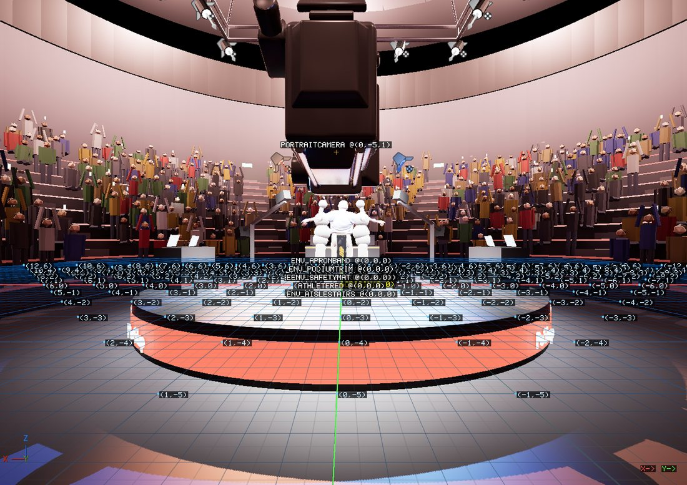
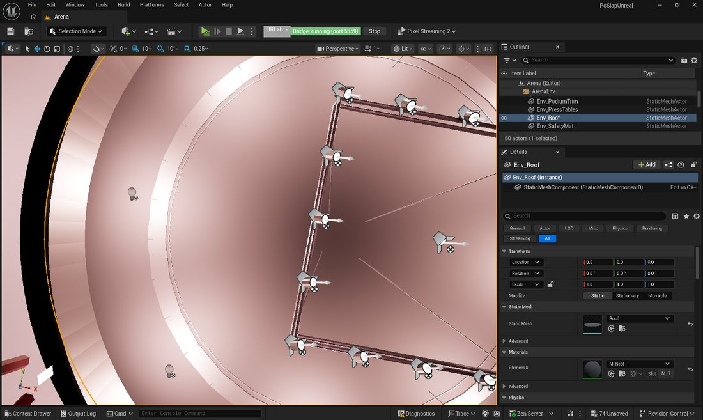
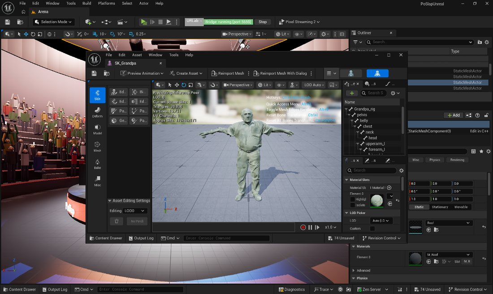
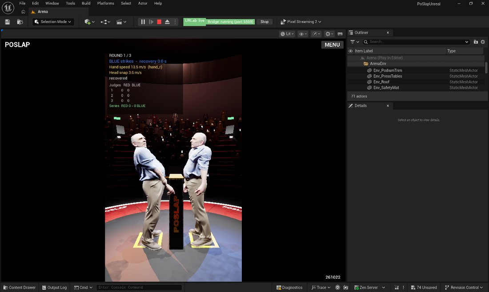
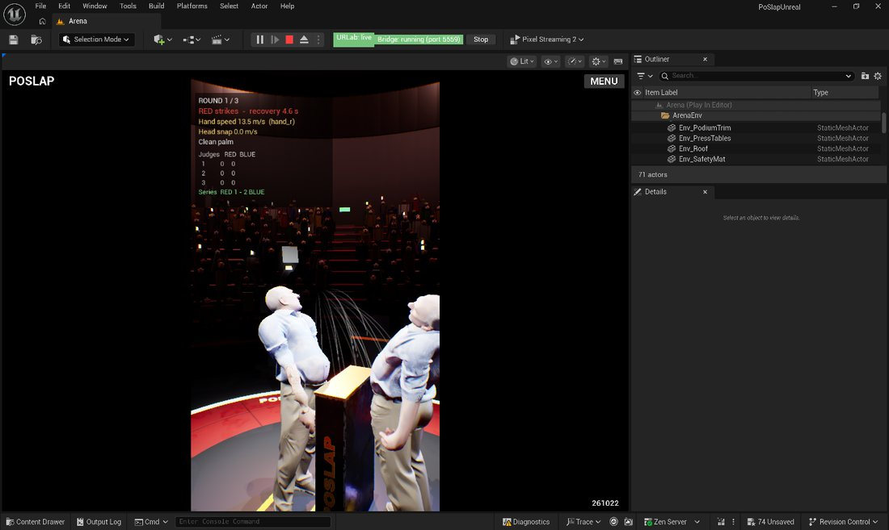
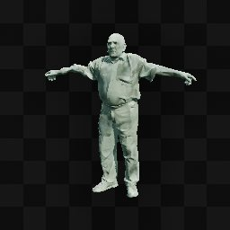
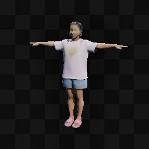
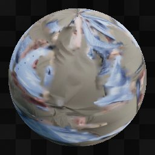
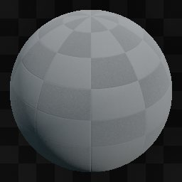

CaptureViewport with annotations: world grid, coordinate labels, actor names. 38 actors in frustum; 13 spot + 5 point lights, 2 athletes, 8 arena meshes, the 9:16 cine camera.
Editor: UE 5.8, project PoSlapUnreal.uproject, level /Game/Levels/Arena.Arena.
MCP server on http://127.0.0.1:8000/mcp (ModelContextProtocol + AllToolsets).
Everything below was driven through MCP from the running editor; no manual clicking.


OpenEditorForAsset on SK_Grandpa: 20 000 tris, and the rig hierarchy pelvis → belly → chest → neck → head and upperarm_l → forearm_l … — exactly BLUEPRINT §2.3.


CaptureViewport with annotations: world grid, coordinate labels, actor names. 38 actors in frustum; 13 spot + 5 point lights, 2 athletes, 8 arena meshes, the 9:16 cine camera.




| Area | Result | Evidence |
|---|---|---|
| MCP handshake | PASS | initialize → 2024-11-05 + session id; initialized → 202; tools/list → 3 meta-tools; DELETE → 202 |
| Tool catalogue | PASS | 53 toolsets; EditorAppToolset 21 tools, LogsToolset 4 |
| Real engine round trip | PASS | call_tool GetVerbosity → {"returnValue":"Log"} |
| Match flow | PASS | 5 consecutive matches: coin toss → turns → strikes 13.5/12.9 m/s → KO by belly knockdown → result. 1 KO in 3 strikes = 33 % (L4 target 10–40 %) |
| Palm scoring rule | PASS | "palm": true on clean strikes; web build also emits the foul clubbing (not the palm) when a forearm lands |
| Judges / 10-point-must | PASS | cards [[10,9],[10,9],[10,9]] from 3 judges |
| Fatigue + neck damage | PASS | condition falls per strike, e.g. red [0.950,1.000] → [0.900,0.880] |
| Telemetry JSONL | PASS | Logs/Gameplay/261024/ — 221 files; full match = match_start, turn_start×3, frame×259, strike×3, condition×3, knockdown, turn_end×3, round, result |
| Build stamp | STALE (by design) | shows 261022; binary compiled 23 Oct against a 22 Oct commit. Last two commits are content-only |
| Spatial maths | PASS | world origin → screen 0.497; +100 cm X → 0.425 (left, correct for yaw 90); +59 cm Z → higher; screen centre → world |
| Web build | PASS | node Web/check.mjs for gg / kk / gk — MuJoCo WASM + onnxruntime-web, ~11× real time (21 s sim in 1.9 s) |
| Editor throttling | PASS | bThrottleCPUWhenNotForeground=False in DefaultEditorPerProjectUserSettings.ini |
| Log health | PASS | MapCheck 0 errors / 0 warnings; no LogSlap errors; MuJoCo, libzmq and CoACD natives all loaded |
| # | Issue | Severity |
|---|---|---|
| 1 | SelectAssets needs a full object path (/Game/Athletes/Kim/SK_Kim.SK_Kim). A bare package path (/Game/Athletes/Kim/SK_Kim) times out with “Timed out waiting for asset selection.” | Medium — usable, wrong shape fails |
| 2 | GetSelectedAssets returns [] even after SelectAssets reports success. The content browser does navigate to the asset's folder, so the selection is half-applied but unreadable back. | Medium — round-trip broken |
| 3 | CaptureViewport rejects an omitted or null annotations (“input param ‘annotations’ needs a default value”). It has to be sent as a full object every time, even for a plain screenshot. | Low — workaround known |
| 4 | Editor reports 74 Unsaved packages after the startup Interchange reimport. 23 files are already written to disk (13 modified .uasset + 10 untracked in Content/Art/Exports/Arena.fbm/); the rest are dirty in memory only. | Medium — decide before closing the editor |
| 5 | FocusOnActors is refused while PIE runs (documented). Fine, but it means scene navigation and simulation cannot be interleaved. | Low — by design |
| 6 | Frame telemetry is sampled at 10 Hz and t resets each turn, so the 5 s recovery window is not recorded. A full replay cannot be reconstructed from the JSONL alone. | Low — sampling choice |
| 7 | mujoco.dll and amfrt64.dll fail to load on the first attempt, then resolve a few seconds later; LogPixelStreaming2RTC reports “GEngine is not valid” during startup. All self-correct before the first frame. | Low — startup race, harmless |
UE 5.8 uses Streamable HTTP, not plain POST:
GET /mcp returns 405 — that is spec-compliant, not a fault.data: {...}); the server holds the connection ~30 s, so a short client timeout looks like a failure even after the request was processed (check LogModelContextProtocol).Accept: application/json, text/event-stream and echo the Mcp-Session-Id header on every later call.{"jsonrpc":"2.0","id":N,"method":...}; call inner tools through call_tool with toolset_name / tool_name / arguments, where tool_name is the short name (SetVerbosity, not EditorToolset.LogsToolset.SetVerbosity).returnValue.data (editor image) or returnValue.image.data (viewport).